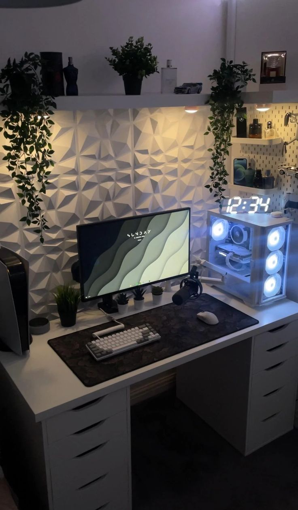

Monitor
Monitor kuvab arvutist tulevat pilti. Seda kasutatakse programmide, mängude ja veebilehtede vaatamiseks. Monitor on arvuti väljundseade.


Monitor kuvab arvutist tulevat pilti. Seda kasutatakse programmide, mängude ja veebilehtede vaatamiseks. Monitor on arvuti väljundseade.